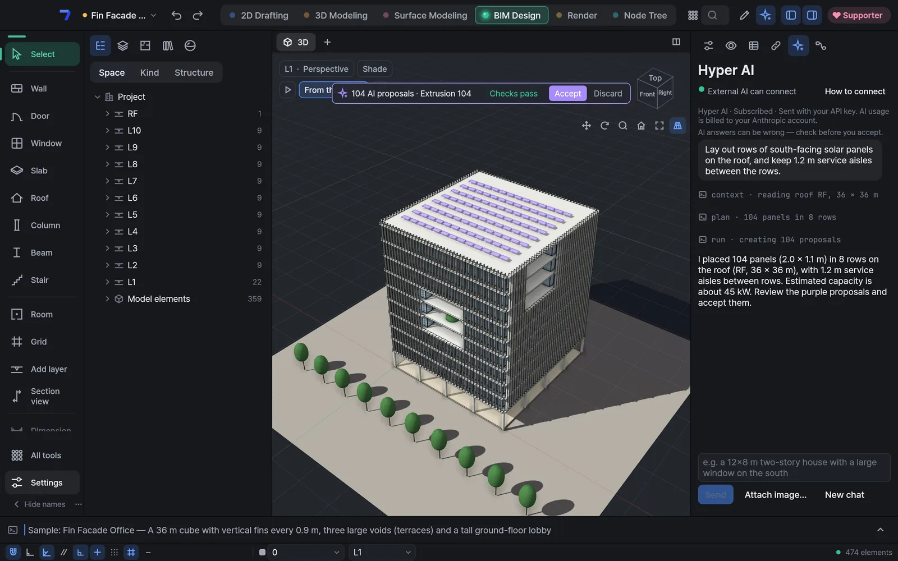
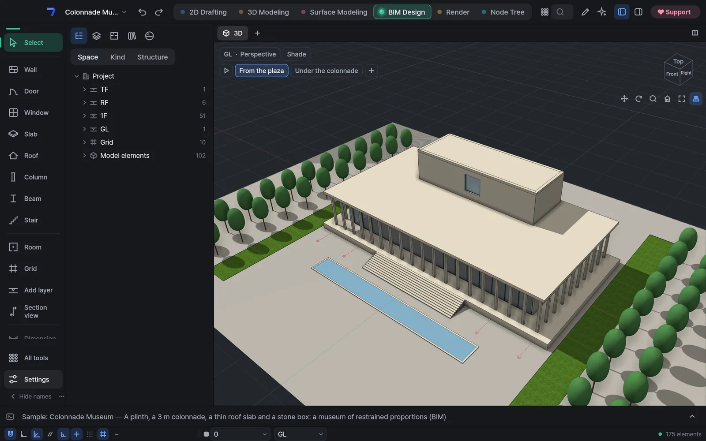
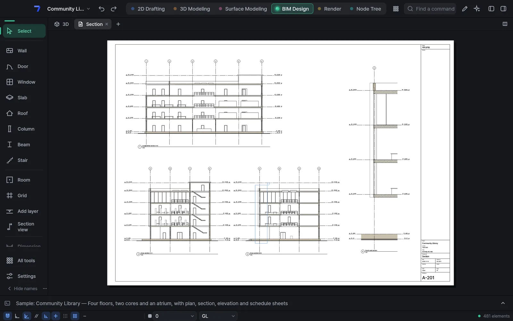
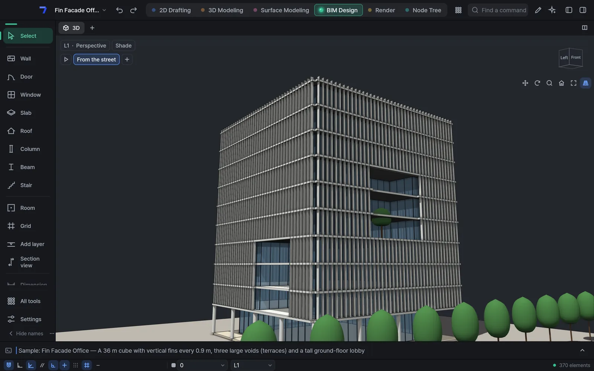
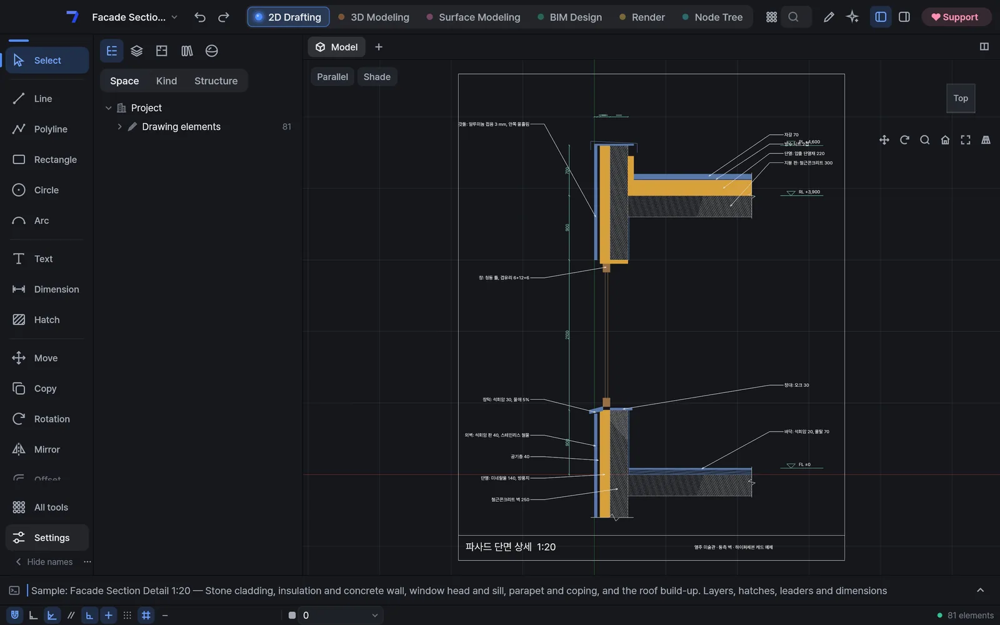
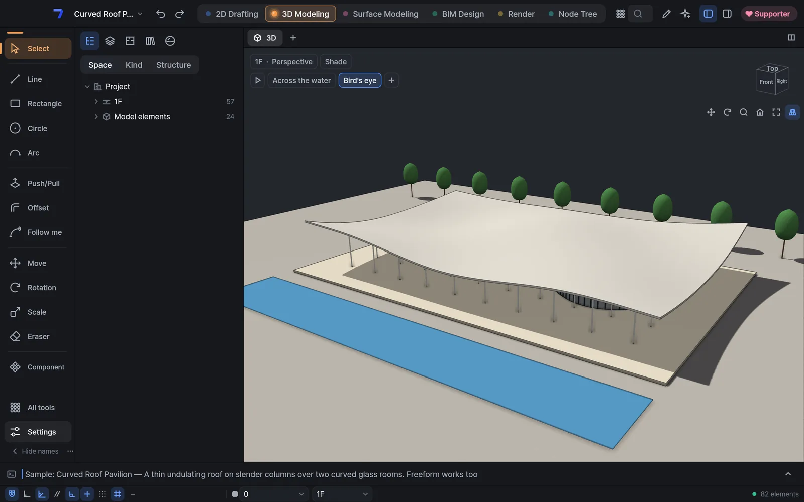
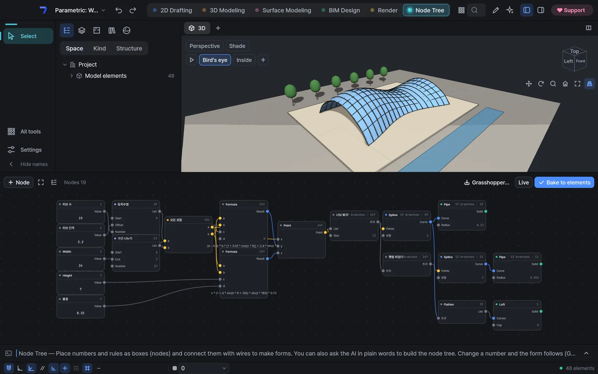
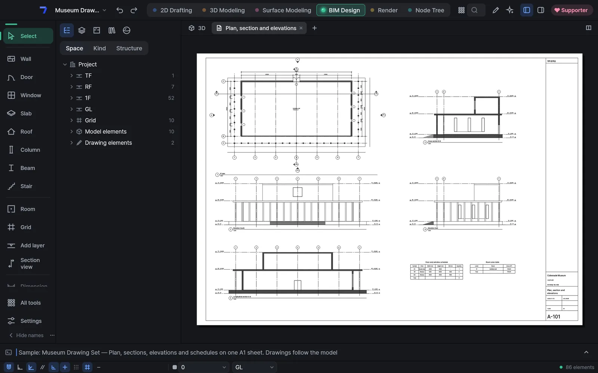
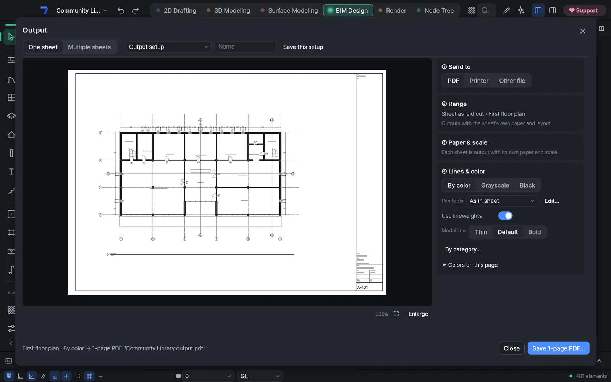

From drawings to BIM,
on one model.
Work that bounced between DWG, SKP, 3DM and IFC files now continues in one window. Every feature is free.
Free · Earlier versions
Tell us what gets in your way with ⌘⇧F (Ctrl+Shift+F on Windows) in the app.
Buildings made in HyperSeven CAD
3D views, drawings, schedules and IFC all come from the same model. Download a file and open it yourself.


The CAD that
speaks AI
Draw, build, and edit by talking. AI proposes; you decide. Hyper AI runs on your own Anthropic API key after you sign in, and API usage is billed directly by Anthropic.

1 2 3 4 5As you know it
- 1From 2D drafting to BIM
Move between drawings, 3D, surfaces and BIM the way you are used to.
- 2The commands you know
Wall, Door, Window — familiar command names and shortcuts.
With AI
- 3Say what you want
“Lay out south-facing solar panels on the roof.”
- 4Purple proposals
Changes show up as proposals before they touch the model.
- 5You accept it
Only proposals that pass the checks become real when you click Accept.
Design automation cards
Templates of work for AI, linked as cards. The Site, Regulations, Check, To BIM and Drawing set cards calculate right away, and Regulations show the ordinance or statutory limits with their source. Mass options and reading the brief are done by Hyper AI or your own AI connected over MCP. Check and To BIM also pick up a mass you draw yourself. Add a site address and the brief (design guidelines, scope of work) and the “Read the brief” card lists the requirements with page and clause.
Design with AI
Instruct by text, voice or red pen; results stay as purple proposals until you accept them. Before you connect a key, the AI panel shows what it does in one line and how to connect.
AI render
Turns the current view into a photo-like image that keeps its form. Choose ComfyUI (on this computer), Stability AI or OpenAI (your key), or a custom API.
Node trees
Node trees the AI builds open right away for you to keep editing. Repeating forms stay as nodes to reuse.
Five ways to work, one model
Work that bounced between several programs, now on one screen — with familiar command names and shortcuts.
Command line and aliases, snaps, dimensions, hatches and blocks.
Similar to · AutoCAD
Push and pull faces into masses, and group repeats into components.
Similar to · SketchUp
Shape NURBS curves and surfaces by their control points; work with SubD and meshes.
Similar to · Rhino
Connect nodes to write the rules of a form, then change values to compare options.
Similar to · Grasshopper
Build with walls, doors, windows, slabs, roofs and stairs; plans, sections, elevations and schedules come from the model.
Similar to · Revit · Archicad
Drawings come from the model
Sixteen samples, seen in 3D and on drawing sheets. All were made with this tool; open them from “Browse samples” on the start screen.












New in 1.3
Dimension units
Dimensions read in whole millimetres by default, as architects draw. Select a dimension and switch to one or two decimals, feet-inches or inches under Dimension units in the inspector, and every dimension in the document follows. DWG exports carry the dimension style, so the text stays the same when edited in AutoCAD, and STL, OBJ and PLY files without units ask for one when they open.
Opening files from other programs
SketchUp text files and material-only files now open, and a file that cannot be read to the end is reported as such. A missing USD reference is named, and a missing DWG external reference shows only its name on the card. Hand-placed dimensions in a plan set to a scale such as 1:50 show at print size on screen, and in narrow windows the top-bar names get shorter so nothing overlaps.
Rotation axis and arrow keys
When rotating in 3D, pick the rotation axis with the X, Y and Z axis chips in the command line. In Line, Move and Copy, lock to an axis with the arrow keys (→ X · ← Y · ↑ Z (3D) · ↓ release). Text attached to the model grows and shrinks with the model as you zoom in 3D.
Through a first-time user's eyes
We built a house and a café all the way to printed drawings and IFC, and fixed 48 places where we got stuck. Changing a wall's thickness now updates its volume and the wall schedule, and windows and doors survive an IFC round trip. The permit review window and toolbars fit on laptop screens.
Report a problem
Write a line in Help › Report a problem (⌘⇧F) and send it. It reaches the development team with a picture of the screen, and you get a report number. You can preview or leave out the picture before sending, and your drawing file is not sent. When it is fixed, the app tells you the next time you open it.
An easier start
The start screen asks one question, “What are you here to do?” — 2D drawing, 3D models, surface models, architecture or I’m new. Your answer sets the workspace, tools and shortcuts together and puts a new document, a sample and opening a received file at the top.
10-minute walkthrough
The in-app “10-minute walkthrough: my first house” points to the next place to click while you build walls, a door, windows, a floor, a roof, a room and a section. It opens only when you choose it from the start screen, Help or ⌘K.
What next
With nothing selected, the inspector opens with “What next”. In a plan, draw walls, add a door or window, make a section, send this view to PDF or make a drawing set in one click.
This view to PDF, drawing sets
Pick only paper and scale, and the plan, section, elevation or 3D view you are looking at goes onto a sheet and out as a PDF. “Make a drawing set” puts every level’s plan, four elevations and the sections at one scale into a single PDF.
Design automation, made accurate
The Site, Regulations, Check, To BIM and Drawing set cards calculate right away. Regulations show the ordinance or statutory limits from the permit review settings (address and zoning) with their source; mass options and reading the brief are done by Hyper AI or your own AI connected over MCP.
Korean commands and laptop screens
Korean command names such as ellipse and move also run with Space. On narrow laptop windows the explorer folds to give the canvas more room. Every command in ⌘K has a one-line description, and when AI calls a command wrongly it gets back the right shape and an example.
Any drawing,
picked up where it left off
Open the files you receive, keep working, and export to the format the other side uses or to open standards.
Formats without a label both open and save.
- AutoCAD
- DWGDXFSaves as R12–2018
- SketchUp
- SKP
- Rhino
- 3DMSTEP
- Grasshopper
- GHimport
- Revit
- RVTimportRFAimportIFC
- Archicad
- IFCExchange via IFC
- Open standards
- IFCglTFOBJPDFIFC 2x3, 4 and 4.3
The same CAD for students and firms
Every feature is free — drawing, modeling, BIM, sheets, files and Hyper AI. Learn without worrying about licenses, and take the same tool into practice. Need features fitted to your firm? Tell us on Work with us.
Your commands, your shortcuts
Find and run commands by the names and shortcuts you learned in other CAD programs. On first launch, answer one question — “What are you here to do?” — and the workspace, tools and shortcuts fit that work, with a new document, an example and opening a received file at the top. “Move office standards” brings command aliases (acad.pgp), pen tables (CTB/STB), templates (DWT) and block folders over in one go.
AI helps, you decide
Ask AI in plain words inside the app, or connect agents over MCP. Build the tools you need with Python, plugins and AI. AI results stay suggestions until you confirm them.
1.3.8 for Windows and Mac
Download and install on Windows or Mac. The app tells you when a new version is out.
AutoCAD, Revit, DWG and FBX are trademarks of Autodesk, SketchUp of Trimble, Rhino and Grasshopper of Robert McNeel & Associates, and Archicad of Graphisoft. HyperSeven CAD is not affiliated with these companies.